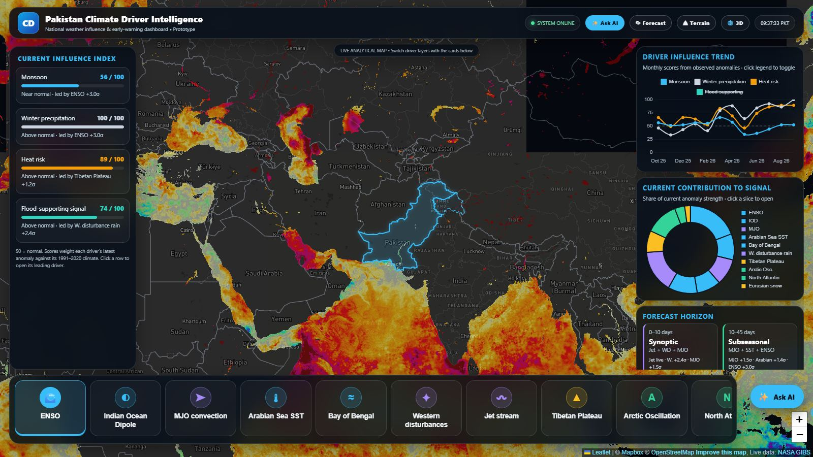
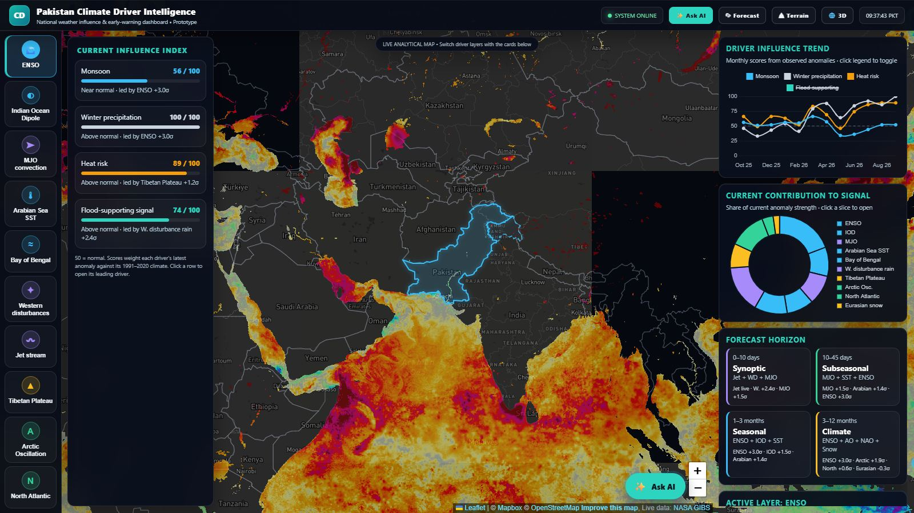
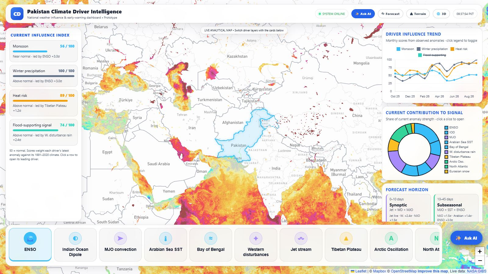
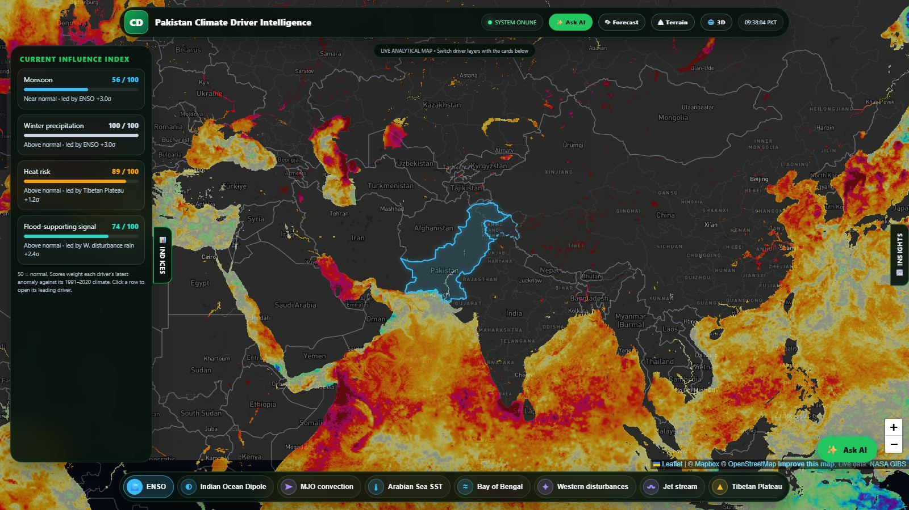

Original · unchanged
Current portal
The portal as it is today: floating dark glass panels on both sides, driver tabs along the bottom.
Open original →
Prototype A
Command Center
A control-room dashboard in navy and teal.
- Slim full-width top bar
- Drivers as a vertical rail on the left
- Panels docked edge to edge, so nothing floats over the map

Prototype B
Clean Light
A bright, airy theme with blue accents.
- White cards with soft shadows and a light map
- Dark text and darker chart lines for easy reading
- Good for presentations, projectors and printing

Prototype C
Immersive Map
The map takes the whole screen, with Pakistan-green accents.
- Floating pill-shaped top bar and driver chips
- Side panels slide in as drawers: INDICES tab on the left, INSIGHTS on the right
- Best for exploring the map, wind and 3D views